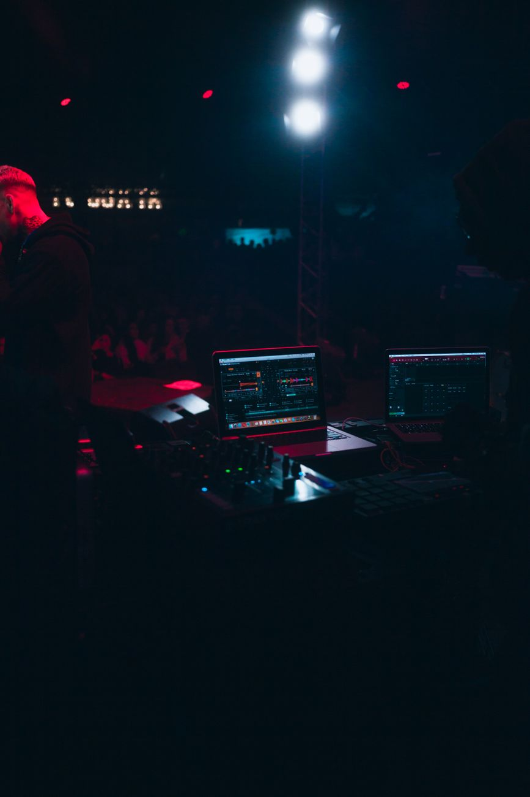
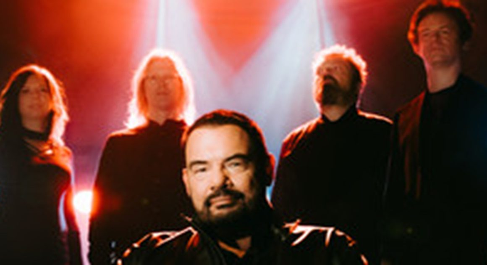
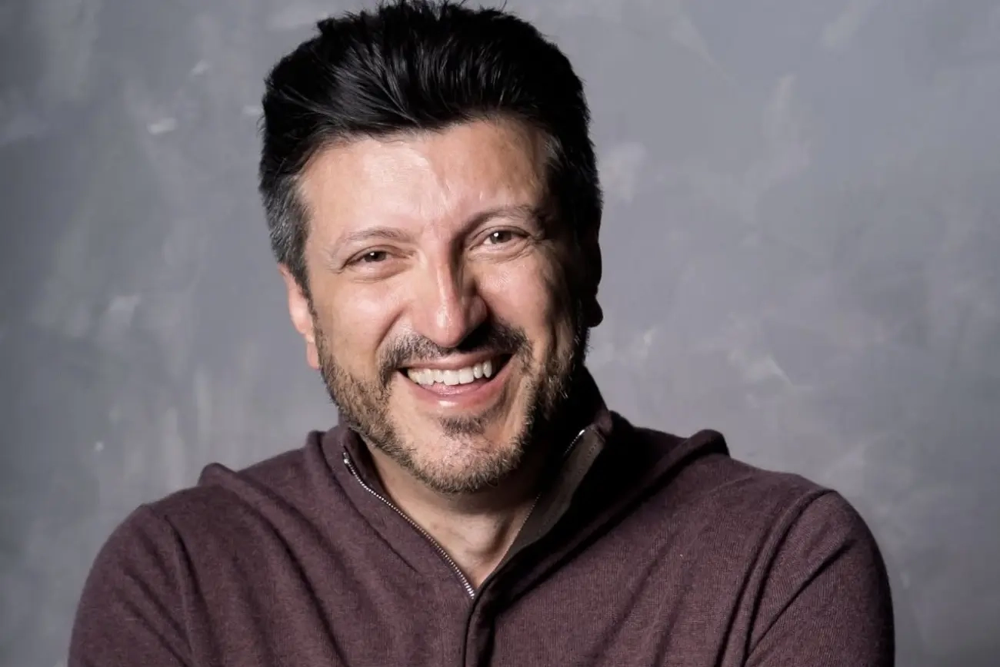
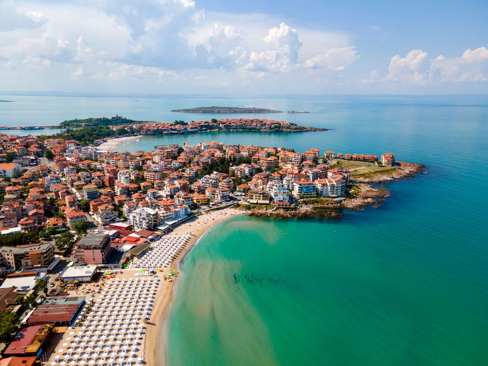
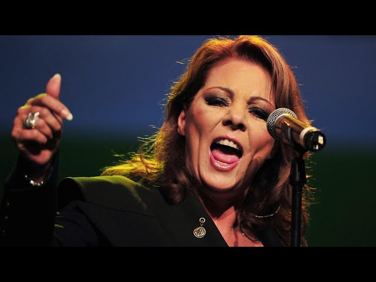
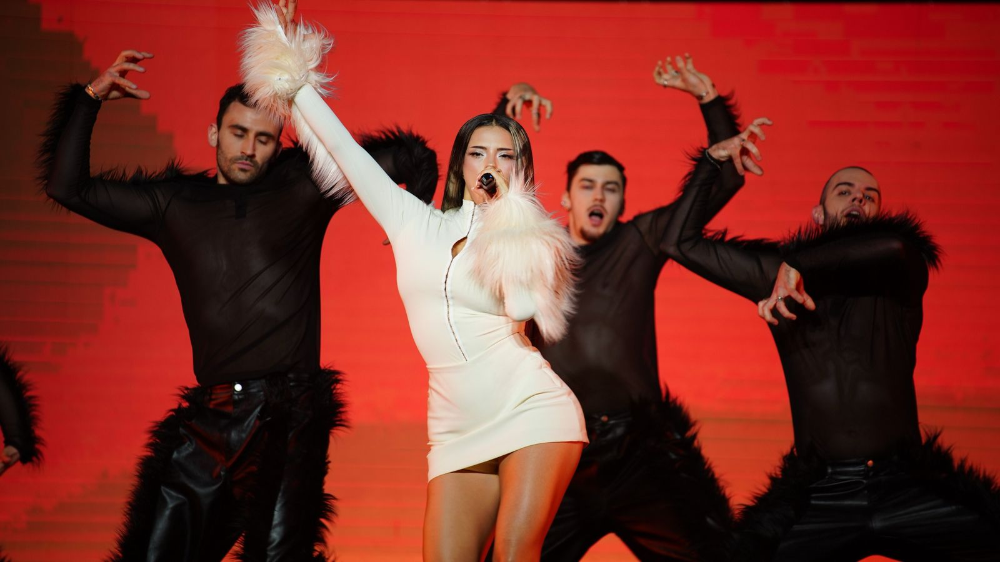
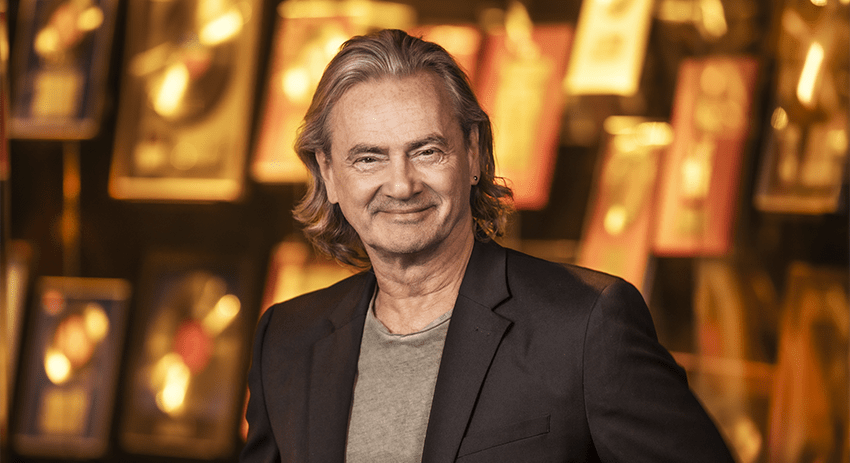
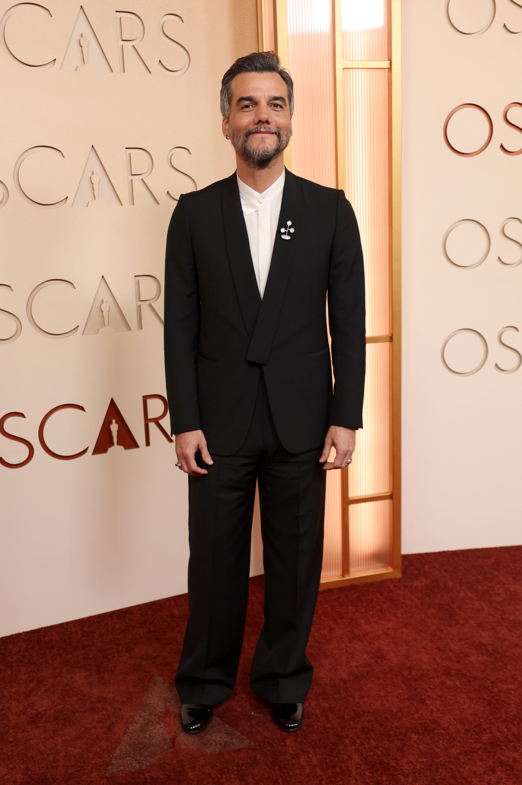

urbanna
Quando o universo dos poderosos contaminou o cenário musical
De um dos símbolos da noite underground de São Paulo ao “Vorcaroween”: quando a música deixa de ser apenas trilha sonora e passa a fazer parte da arquitetura do poder.
Área exclusiva para assinantes
Conteúdo reservado
Confirme o e-mail da sua assinatura para acessar os resumos desta edição.
Esta visualização é exclusiva para assinantes.

urbanna
De um dos símbolos da noite underground de São Paulo ao “Vorcaroween”: quando a música deixa de ser apenas trilha sonora e passa a fazer parte da arquitetura do poder.

urbanna
Banda foi desconvidada de festival criado por Lukas Podolski (do 7×1) por serem “políticos demais”, mas artistas conservadores estão no lineup.
urbanna
A série Fallout revela reflexões sobre decisões humanas que levam ao colapso social e ambiental atual.

urbanna
Lito Sousa, piloto e criador do canal “Aviões e Músicas”, enfrenta doenças graves, mobilizando apoio.

urbanna
Burgas, na Bulgária, sediará o Eurovision 2027 após vencer com “Bangaranga”.

urbanna
Cantora de “Maria Magdalena” irá cantar no Chile, em novembro

urbanna
Com um pacote que inclui até meme, a Bulgária foi catapultada à sua inédita vitória. Mas a 70ª edição foi, em mais de um sentido, histórica além do pódio.
urbanna
Semifinal marcada por polêmicas até antes da realização, já constata o que muitos fãs estão cansados de perceber.

urbanna
Christer Bjorkman é o primeiro todo poderoso do festival a admitir que foi tudo pelos ares: a saída dos cinco já causou impactos significativos ao Eurovision.

urbanna
Se não fizemos história daquela forma, fizemos por outra.